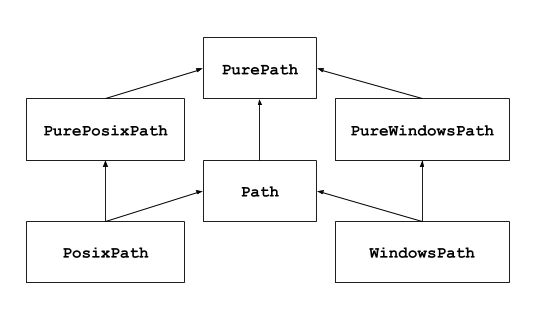

pathlib — Caminhos do sistema de arquivos orientados a objetos¶
Adicionado na versão 3.4.
Código-fonte: Lib/pathlib/
Este módulo oferece classes que representam caminhos de sistema de arquivos com semântica apropriada para diferentes sistemas operacionais. As classes de caminho são divididas entre caminhos puros, que fornecem operações puramente computacionais sem E/S, e caminhos concretos, que herdam de caminhos puros, mas também fornecem operações de E/S.

Se você nunca usou este módulo antes ou apenas não tem certeza de qual classe é a certa para sua tarefa, provavelmente Path é o que você precisa. Esta classe instancia um caminho concreto para a plataforma em que o código está sendo executado.
Caminhos puros são úteis em alguns casos especiais. Por exemplo:
Se você deseja manipular os caminhos do Windows em uma máquina Unix (ou vice-versa). Você não pode instanciar
WindowsPathquando está no Unix, mas você pode instanciarPureWindowsPath.Você quer ter certeza de que seu código apenas manipula caminhos, sem realmente acessar o sistema operacional. Nesse caso, instanciar uma das classes puras pode ser útil, pois elas simplesmente não têm nenhuma operação de acesso ao sistema operacional.
Ver também
PEP 428: O módulo pathlib – caminhos de sistema de arquivos orientados a objetos.
Ver também
Para manipulação de caminho de baixo nível em strings, você também pode usar o módulo os.path.
Uso básico¶
Importando a classe principal:
>>> from pathlib import Path
Listando os subdiretórios:
>>> p = Path('.')
>>> [x for x in p.iterdir() if x.is_dir()]
[PosixPath('.hg'), PosixPath('docs'), PosixPath('dist'),
PosixPath('__pycache__'), PosixPath('build')]
Listando os arquivos fontes do Python e sua árvore de diretórios:
>>> list(p.glob('**/*.py'))
[PosixPath('test_pathlib.py'), PosixPath('setup.py'),
PosixPath('pathlib.py'), PosixPath('docs/conf.py'),
PosixPath('build/lib/pathlib.py')]
Navegando dentro da árvore de diretórios:
>>> p = Path('/etc')
>>> q = p / 'init.d' / 'reboot'
>>> q
PosixPath('/etc/init.d/reboot')
>>> q.resolve()
PosixPath('/etc/rc.d/init.d/halt')
Consultando as propriedades do path:
>>> q.exists()
True
>>> q.is_dir()
False
Abrindo um arquivo:
>>> with q.open() as f: f.readline()
...
'#!/bin/bash\n'
Exceções¶
- exception pathlib.UnsupportedOperation¶
Uma exceção herdada de
NotImplementedErrorque é levantada quando uma operação não suportada é chamada em um objeto caminho.Adicionado na versão 3.13.
Caminhos puros¶
Objetos de caminho puro fornecem operações de manipulação de caminho que, na verdade, não acessam um sistema de arquivos. Existem três maneiras de acessar essas classes, que também chamamos de sabores:
- class pathlib.PurePath(*pathsegments)¶
Uma classe genérica que representa o tipo de caminho do sistema (ao instanciá-la, cria-se uma
PurePosixPathou umaPureWindowsPath):>>> PurePath('setup.py') # Executando em uma máquina Unix PurePosixPath('setup.py')
Cada elemento de pathsegments pode ser uma string representando um segmento de caminho, um objeto que implementa a interface que retorna uma string ou um objeto implementando a interface
os.PathLike, onde o método__fspath__()retorna uma string, como outro objeto caminho:>>> PurePath('foo', 'algum/caminho', 'bar') PurePosixPath('foo/algum/caminho/bar') >>> PurePath(Path('foo'), Path('bar')) PurePosixPath('foo/bar')
Quando pathsegments está vazio ou consiste am apenas strings vazias, o diretório atual é presumido:
>>> PurePath(), PurePath('') (PurePosixPath('.'), PurePosixPath('.'))
Se um segmento for um caminho absoluto, todos os segmentos anteriores serão ignorados (como
os.path.join()):>>> PurePath('/etc', '/usr', 'lib64') PurePosixPath('/usr/lib64') >>> PureWindowsPath('c:/Windows', 'd:bar') PureWindowsPath('d:bar')
No Windows, a unidade não é redefinida quando um segmento de caminho relativo enraizado (por exemplo,
r'\foo') é encontrado:>>> PureWindowsPath('c:/Windows', '/Program Files') PureWindowsPath('c:/Program Files')
Barras espúrias e pontos simples são recolhidos, mas pontos duplos (
'..') e barras duplas iniciais ('//') não são, pois isso mudaria o significado de um caminho por vários motivos (por exemplo, links simbólicos, caminhos UNC):>>> PurePath('foo//bar') PurePosixPath('foo/bar') >>> PurePath('//foo/bar') PurePosixPath('//foo/bar') >>> PurePath('foo/./bar') PurePosixPath('foo/bar') >>> PurePath('foo/../bar') PurePosixPath('foo/../bar')
(uma abordagem ingênua seria criar
PurePosixPath('foo/../bar')equivalente aPurePosixPath('bar'), o que é errado sefoofor um link simbólico para outro diretório)Objetos caminho puro implementam a interface
os.PathLike, permitindo que sejam usados em qualquer lugar em que a interface seja aceita.Alterado na versão 3.6: Adicionado suporte para a interface
os.PathLike.
- class pathlib.PurePosixPath(*pathsegments)¶
Uma subclasse de
PurePath, este tipo de caminho representa caminhos de sistema de arquivos não Windows:>>> PurePosixPath('/etc/hosts') PurePosixPath('/etc/hosts')
pathsegments é especificado de forma similar para
PurePath.
- class pathlib.PureWindowsPath(*pathsegments)¶
Uma subclasse de
PurePath, este tipo de caminho representa os caminhos do sistema de arquivos do Windows, incluindo Caminhos UNC:>>> PureWindowsPath('c:/', 'Users', 'Ximénez') PureWindowsPath('c:/Users/Ximénez') >>> PureWindowsPath('//servidor/compartilhamento/arquivo') PureWindowsPath('//servidor/compartilhamento/arquivo')
pathsegments é especificado de forma similar para
PurePath.
Independentemente do sistema em que você está usando, você pode instanciar todas essas classes, uma vez que elas não fornecem nenhuma operação que faça chamadas de sistema.
Propriedades gerais¶
Os caminhos são imutáveis e hasheáveis. Os caminhos do mesmo sabor são comparáveis e ordenáveis. Essas propriedades respeitam a semântica de caixa alta e baixa do sabor:
>>> PurePosixPath('foo') == PurePosixPath('FOO')
False
>>> PureWindowsPath('foo') == PureWindowsPath('FOO')
True
>>> PureWindowsPath('FOO') in { PureWindowsPath('foo') }
True
>>> PureWindowsPath('C:') < PureWindowsPath('d:')
True
Caminhos de um sabor diferente são comparados de forma desigual e não podem ser ordenados:
>>> PureWindowsPath('foo') == PurePosixPath('foo')
False
>>> PureWindowsPath('foo') < PurePosixPath('foo')
Traceback (most recent call last):
File "<stdin>", line 1, in <module>
TypeError: '<' not supported between instances of 'PureWindowsPath' and 'PurePosixPath'
Operadores¶
O operador barra ajuda a criar caminhos filhos, como os.path.join(). Se o argumento for um caminho absoluto, o caminho anterior será ignorado. No Windows, a unidade não é redefinida quando o argumento é um caminho relativo enraizado (por exemplo, r'\foo'):
>>> p = PurePath('/etc')
>>> p
PurePosixPath('/etc')
>>> p / 'init.d' / 'apache2'
PurePosixPath('/etc/init.d/apache2')
>>> q = PurePath('bin')
>>> '/usr' / q
PurePosixPath('/usr/bin')
>>> p / '/um_caminho_absoluto'
PurePosixPath('/um_caminho_absoluto')
>>> PureWindowsPath('c:/Windows', '/Program Files')
PureWindowsPath('c:/Program Files')
Um objeto de caminho pode ser usado em qualquer lugar em que um objeto implementando os.PathLike seja aceito:
>>> import os
>>> p = PurePath('/etc')
>>> os.fspath(p)
'/etc'
A representação de string de um caminho é o próprio caminho do sistema de arquivos bruto (na forma nativa, por exemplo, com contrabarras no Windows), que você pode passar para qualquer função usando um caminho de arquivo como uma string:
>>> p = PurePath('/etc')
>>> str(p)
'/etc'
>>> p = PureWindowsPath('c:/Program Files')
>>> str(p)
'c:\\Program Files'
Da mesma forma, chamar bytes em um caminho fornece o caminho do sistema de arquivos bruto como um objeto bytes, codificado por os.fsencode():
>>> bytes(p)
b'/etc'
Nota
A chamada de bytes só é recomendada no Unix. No Windows, a forma Unicode é a representação canônica dos caminhos do sistema de arquivos.
Acessando partes individuais¶
Para acessar as “partes” individuais (componentes) de um caminho, use a seguinte propriedade:
- PurePath.parts¶
Uma tupla que dá acesso aos vários componentes do caminho:
>>> p = PurePath('/usr/bin/python3') >>> p.parts ('/', 'usr', 'bin', 'python3') >>> p = PureWindowsPath('c:/Program Files/PSF') >>> p.parts ('c:\\', 'Program Files', 'PSF')
(observe como a unidade e a raiz local são reagrupadas em uma única parte)
Métodos e propriedades¶
Caminhos puros fornecem os seguintes métodos e propriedades:
- PurePath.parser¶
A implementação do módulo
os.pathusado para análise e junção de caminhos de baixo nível:posixpathountpath.Adicionado na versão 3.13.
- PurePath.drive¶
Uma string que representa a letra ou nome da unidade, se houver:
>>> PureWindowsPath('c:/Program Files/').drive 'c:' >>> PureWindowsPath('/Program Files/').drive '' >>> PurePosixPath('/etc').drive ''
Os compartilhamentos UNC também são considerados unidades:
>>> PureWindowsPath('//host/compartilhamento/foo.txt').drive '\\\\host\\compartilhamento'
- PurePath.root¶
Uma string que representa a raiz (local ou global), se houver:
>>> PureWindowsPath('c:/Program Files/').root '\\' >>> PureWindowsPath('c:Program Files/').root '' >>> PurePosixPath('/etc').root '/'
Os compartilhamentos UNC sempre têm uma raiz:
>>> PureWindowsPath('//host/compartilhamento').root '\\'
Se o caminho começa com mais de duas barras sucessivas,
PurePosixPathas recolhe:>>> PurePosixPath('//etc').root '//' >>> PurePosixPath('///etc').root '/' >>> PurePosixPath('////etc').root '/'
Nota
Este comportamento está em conformidade com o parágrafo 4.11 Pathname Resolution do The Open Group Base Specifications Issue 6:
“Um nome de caminho que começa com duas barras sucessivas pode ser interpretado de maneira definida pela implementação, embora mais de duas barras iniciais devam ser tratadas como uma única barra.”
- PurePath.anchor¶
A concatenação da unidade e da raiz:
>>> PureWindowsPath('c:/Program Files/').anchor 'c:\\' >>> PureWindowsPath('c:Program Files/').anchor 'c:' >>> PurePosixPath('/etc').anchor '/' >>> PureWindowsPath('//host/compartilhamento').anchor '\\\\host\\compartilhamento\\'
- PurePath.parents¶
Uma sequência imutável que fornece acesso aos ancestrais lógicos do caminho:
>>> p = PureWindowsPath('c:/foo/bar/setup.py') >>> p.parents[0] PureWindowsPath('c:/foo/bar') >>> p.parents[1] PureWindowsPath('c:/foo') >>> p.parents[2] PureWindowsPath('c:/')
Alterado na versão 3.10: A sequência pai agora tem suporte fatias e valores de índice negativos.
- PurePath.parent¶
O pai lógico do caminho:
>>> p = PurePosixPath('/a/b/c/d') >>> p.parent PurePosixPath('/a/b/c')
Você não pode passar por uma âncora ou caminho vazio:
>>> p = PurePosixPath('/') >>> p.parent PurePosixPath('/') >>> p = PurePosixPath('.') >>> p.parent PurePosixPath('.')
Nota
Esta é uma operação puramente lexical, daí o seguinte comportamento:
>>> p = PurePosixPath('foo/..') >>> p.parent PurePosixPath('foo')
Se você deseja percorrer um caminho arbitrário do sistema de arquivos para cima, é recomendável primeiro chamar
Path.resolve()para resolver os links simbólicos e eliminar os componentes"..".
- PurePath.name¶
Uma string que representa o componente do caminho final, excluindo a unidade e a raiz, se houver:
>>> PurePosixPath('minha/biblioteca/setup.py').name 'setup.py'
Nomes de unidades UNC não são considerados::
>>> PureWindowsPath('//algum/compartilhamento/setup.py').name 'setup.py' >>> PureWindowsPath('//algum/compartilhamento').name ''
- PurePath.suffix¶
A última parte separada por pontos do componente final, se houver:
>>> PurePosixPath('minha/biblioteca/setup.py').suffix '.py' >>> PurePosixPath('minha/biblioteca.tar.gz').suffix '.gz' >>> PurePosixPath('minha/biblioteca').suffix ''
Isso é comumente chamado de extensão de arquivo.
Alterado na versão 3.14: Um único ponto (”
.”) é considerado um sufixo válido.
- PurePath.suffixes¶
Uma lista dos sufixos do caminho, com frequência chamados de extensões de arquivo:
>>> PurePosixPath('minha/biblioteca.tar.gar').suffixes ['.tar', '.gar'] >>> PurePosixPath('minha/biblioteca.tar.gz').suffixes ['.tar', '.gz'] >>> PurePosixPath('minha/biblioteca').suffixes []
Alterado na versão 3.14: Um único ponto (”
.”) é considerado um sufixo válido.
- PurePath.stem¶
O componente final do caminho, sem seu sufixo:
>>> PurePosixPath('minha/biblioteca.tar.gz').stem 'library.tar' >>> PurePosixPath('minha/biblioteca.tar').stem 'library' >>> PurePosixPath('minha/biblioteca').stem 'library'
Alterado na versão 3.14: Um único ponto (”
.”) é considerado um sufixo válido.
- PurePath.as_posix()¶
Retorna uma representação de string do caminho com barras (
/):>>> p = PureWindowsPath('c:\\windows') >>> str(p) 'c:\\windows' >>> p.as_posix() 'c:/windows'
- PurePath.is_absolute()¶
Retorna se o caminho é absoluto ou não. Um caminho é considerado absoluto se tiver uma raiz e (se o tipo permitir) uma unidade:
>>> PurePosixPath('/a/b').is_absolute() True >>> PurePosixPath('a/b').is_absolute() False >>> PureWindowsPath('c:/a/b').is_absolute() True >>> PureWindowsPath('/a/b').is_absolute() False >>> PureWindowsPath('c:').is_absolute() False >>> PureWindowsPath('//some/share').is_absolute() True
- PurePath.is_relative_to(other)¶
Retorna se este caminho é ou não relativo a outro caminho, representado por other.
>>> p = PurePath('/etc/passwd') >>> p.is_relative_to('/etc') True >>> p.is_relative_to('/usr') False
Este método é baseado em string; ele não acessa o sistema de arquivos nem trata segmentos “
..” especialmente. O código a seguir é equivalente:>>> u = PurePath('/usr') >>> u == p or u in p.parents False
Adicionado na versão 3.9.
Descontinuado desde a versão 3.12, removido na versão 3.14: A passagem de argumentos adicionais está descontinuada; se fornecidos, eles são unidos com other.
- PurePath.joinpath(*pathsegments)¶
Chamar este método é equivalente a combinar o caminho com cada um dos pathsegments por vez:
>>> PurePosixPath('/etc').joinpath('passwd') PurePosixPath('/etc/passwd') >>> PurePosixPath('/etc').joinpath(PurePosixPath('passwd')) PurePosixPath('/etc/passwd') >>> PurePosixPath('/etc').joinpath('init.d', 'apache2') PurePosixPath('/etc/init.d/apache2') >>> PureWindowsPath('c:').joinpath('/Program Files') PureWindowsPath('c:/Program Files')
- PurePath.full_match(pattern, *, case_sensitive=None)¶
Compara esse caminho com o padrão de estilo glob fornecido. Retorna
Truese a correspondência for bem-sucedida,Falsecaso contrário. Por exemplo:>>> PurePath('a/b.py').full_match('a/*.py') True >>> PurePath('a/b.py').full_match('*.py') False >>> PurePath('/a/b/c.py').full_match('/a/**') True >>> PurePath('/a/b/c.py').full_match('**/*.py') True
Ver também
Documentação de Linguagem de padrões.
Tal como acontece com outros métodos, a distinção entre maiúsculas e minúsculas segue os padrões da plataforma:
>>> PurePosixPath('b.py').full_match('*.PY') False >>> PureWindowsPath('b.py').full_match('*.PY') True
Defina case_sensitive como
TrueouFalsepara substituir esse comportamento.Adicionado na versão 3.13.
- PurePath.match(pattern, *, case_sensitive=None)¶
Compara esse caminho com o padrão no recursivo de estilo glob fornecido. Retorna
Truese a correspondência for bem-sucedida,Falsecaso contrário.Este método é semelhante a
full_match(), mas padrões vazios não são permitidos (ValueErroré levantada), o curinga recursivo “**” não é suportado (ele age como o “*” não recursivo) e, se um padrão relativo for fornecido, a correspondência será feita da direita:>>> PurePath('a/b.py').match('*.py') True >>> PurePath('/a/b/c.py').match('b/*.py') True >>> PurePath('/a/b/c.py').match('a/*.py') False
Alterado na versão 3.12: O parâmetro pattern aceita um objeto caminho ou similar.
Alterado na versão 3.12: O parâmetro case_sensitive foi adicionado.
- PurePath.relative_to(other, walk_up=False)¶
Calcula uma versão deste caminho em relação ao caminho representado por other. Se for impossível,
ValueErroré levantada:>>> p = PurePosixPath('/etc/passwd') >>> p.relative_to('/') PurePosixPath('etc/passwd') >>> p.relative_to('/etc') PurePosixPath('passwd') >>> p.relative_to('/usr') Traceback (most recent call last): File "<stdin>", line 1, in <module> File "pathlib.py", line 941, in relative_to raise ValueError(error_message.format(str(self), str(formatted))) ValueError: '/etc/passwd' is not in the subpath of '/usr' OR one path is relative and the other is absolute.
Quando walk_up é falso (o padrão), o caminho deve começar com other. Quando o argumento é verdadeiro, entradas
..podem ser adicionadas para formar o caminho relativo. Em todos os outros casos, como os caminhos que fazem referência a unidades diferentes,ValueErroré levantada.:>>> p.relative_to('/usr', walk_up=True) PurePosixPath('../etc/passwd') >>> p.relative_to('foo', walk_up=True) Traceback (most recent call last): File "<stdin>", line 1, in <module> File "pathlib.py", line 941, in relative_to raise ValueError(error_message.format(str(self), str(formatted))) ValueError: '/etc/passwd' is not on the same drive as 'foo' OR one path is relative and the other is absolute.
Aviso
Esta função faz parte de
PurePathe funciona com strings. Ela não verifica ou acessa a estrutura do arquivo subjacente. Isso pode impactar a opção walk_up, pois ela presume que não há links simbólicos presentes no caminho; chameresolve()primeiro se necessário para resolver links simbólicos.Alterado na versão 3.12: O parâmetro walk_up foi adicionado (o comportamento antigo é o mesmo de
walk_up=False).Descontinuado desde a versão 3.12, removido na versão 3.14: A passagem de argumentos posicionais adicionais está descontinuada; se fornecidos, eles são unidos com other.
- PurePath.with_name(name)¶
Retorna um novo caminho com o
namealterado. Se o caminho original não tiver um nome, ValueError é levantada:>>> p = PureWindowsPath('c:/Downloads/pathlib.tar.gz') >>> p.with_name('setup.py') PureWindowsPath('c:/Downloads/setup.py') >>> p = PureWindowsPath('c:/') >>> p.with_name('setup.py') Traceback (most recent call last): File "<stdin>", line 1, in <module> File "/home/antoine/cpython/default/Lib/pathlib.py", line 751, in with_name raise ValueError("%r has an empty name" % (self,)) ValueError: PureWindowsPath('c:/') has an empty name
- PurePath.with_stem(stem)¶
Retorna um novo caminho com o
stemalterado. Se o caminho original não tiver um nome, ValueError é levantada:>>> p = PureWindowsPath('c:/Downloads/draft.txt') >>> p.with_stem('final') PureWindowsPath('c:/Downloads/final.txt') >>> p = PureWindowsPath('c:/Downloads/pathlib.tar.gz') >>> p.with_stem('lib') PureWindowsPath('c:/Downloads/lib.gz') >>> p = PureWindowsPath('c:/') >>> p.with_stem('') Traceback (most recent call last): File "<stdin>", line 1, in <module> File "/home/antoine/cpython/default/Lib/pathlib.py", line 861, in with_stem return self.with_name(stem + self.suffix) File "/home/antoine/cpython/default/Lib/pathlib.py", line 851, in with_name raise ValueError("%r has an empty name" % (self,)) ValueError: PureWindowsPath('c:/') has an empty name
Adicionado na versão 3.9.
- PurePath.with_suffix(suffix)¶
Retorna um novo caminho com o
suffixalterado. Se o caminho original não tiver um sufixo, o novo suffixo será anexado. Se o suffix for uma string vazia, o sufixo original será removido:>>> p = PureWindowsPath('c:/Downloads/pathlib.tar.gz') >>> p.with_suffix('.bz2') PureWindowsPath('c:/Downloads/pathlib.tar.bz2') >>> p = PureWindowsPath('README') >>> p.with_suffix('.txt') PureWindowsPath('README.txt') >>> p = PureWindowsPath('README.txt') >>> p.with_suffix('') PureWindowsPath('README')
Alterado na versão 3.14: Um único ponto (”
.”) é considerado um sufixo válido. Em versões anteriores,ValueErrorera levantada se um único ponto fosse fornecido.
- PurePath.with_segments(*pathsegments)¶
Cria um novo objeto caminho do mesmo tipo combinando os pathsegments fornecidos. Este método é chamado sempre que um caminho derivado é criado, como de
parenterelative_to(). Subclasses podem substituir este método para passar informações para caminhos derivados, por exemplo:from pathlib import PurePosixPath class MyPath(PurePosixPath): def __init__(self, *pathsegments, session_id): super().__init__(*pathsegments) self.session_id = session_id def with_segments(self, *pathsegments): return type(self)(*pathsegments, session_id=self.session_id) etc = MyPath('/etc', session_id=42) hosts = etc / 'hosts' print(hosts.session_id) # 42
Adicionado na versão 3.12.
Caminhos concretos¶
Caminhos concretos são subclasses das classes de caminho puro. Além das operações fornecidas por este último, eles também fornecem métodos para fazer chamadas de sistema em objetos de caminho. Existem três maneiras de instanciar caminhos concretos:
- class pathlib.Path(*pathsegments)¶
Uma subclasse de
PurePath, esta classe representa caminhos concretos do tipo de caminho do sistema (instanciando-o cria umaPosixPathou umaWindowsPath):>>> Path('setup.py') PosixPath('setup.py')
pathsegments é especificado de forma similar para
PurePath.
- class pathlib.PosixPath(*pathsegments)¶
Uma subclasse de
PathePurePosixPath, esta classe representa caminhos concretos de sistemas de arquivos não-Windows:>>> PosixPath('/etc/hosts') PosixPath('/etc/hosts')
pathsegments é especificado de forma similar para
PurePath.Alterado na versão 3.13: Levanta
UnsupportedOperationno Windows. Em versões anteriores,NotImplementedErrorera levantada em vez disso.
- class pathlib.WindowsPath(*pathsegments)¶
Uma subclasse de
PathePureWindowsPath, esta classe representa caminhos concretos de sistemas de arquivos do Windows:>>> WindowsPath('c:/', 'Users', 'Ximénez') WindowsPath('c:/Users/Ximénez')
pathsegments é especificado de forma similar para
PurePath.Alterado na versão 3.13: Levanta
UnsupportedOperationem plataformas não-Windows. Em versões anteriores,NotImplementedErrorera levantada em vez disso.
Você só pode instanciar o tipo de classe que corresponde ao seu sistema (permitir chamadas de sistema em tipos de caminho não compatíveis pode levar a bugs ou falhas em sua aplicação):
>>> import os
>>> os.name
'posix'
>>> Path('setup.py')
PosixPath('setup.py')
>>> PosixPath('setup.py')
PosixPath('setup.py')
>>> WindowsPath('setup.py')
Traceback (most recent call last):
File "<stdin>", line 1, in <module>
File "pathlib.py", line 798, in __new__
% (cls.__name__,))
UnsupportedOperation: cannot instantiate 'WindowsPath' on your system
Alguns métodos de caminho concretos podem levantar um OSError se uma chamada de sistema falhar (por exemplo, porque o caminho não existe).
Analisando e gerando URIs¶
Objetos caminho concretos podem ser criados e representados como URIs de ‘file’ em conformidade com RFC 8089.
Nota
URIs de arquivos não são portáteis entre máquinas com diferentes codificações de sistema de arquivos.
- classmethod Path.from_uri(uri)¶
Retorna um novo objeto de caminho a partir da análise sintática de um URI ‘file’. Por exemplo:
>>> p = Path.from_uri('file:///etc/hosts') PosixPath('/etc/hosts')
No Windows, os caminhos do dispositivo DOS e UNC podem ser analisados a partir de URIs:
>>> p = Path.from_uri('file:///c:/windows') WindowsPath('c:/windows') >>> p = Path.from_uri('file://servidor/compartilhamento') WindowsPath('//servidor/compartilhamento')
Várias formas variantes são suportadas:
>>> p = Path.from_uri('file:////servidor/compartilhamento') WindowsPath('//servidor/compartilhamento') >>> p = Path.from_uri('file://///servidor/compartilhamento') WindowsPath('//servidor/compartilhamento') >>> p = Path.from_uri('file:c:/windows') WindowsPath('c:/windows') >>> p = Path.from_uri('file:/c|/windows') WindowsPath('c:/windows')
ValueErroré levantada se o URI não começar comfile:ou se o caminho analisado não for absoluto.Adicionado na versão 3.13.
Alterado na versão 3.14: A autoridade de URL é descartada se corresponder ao nome do host local. Caso contrário, se a autoridade não estiver vazia ou for
localhost, no Windows um caminho UNC será retornado (como antes) e, em outras plataformas, umValueErrorserá levantada.
- Path.as_uri()¶
Representa o caminho como um URI ‘file’.
ValueErroré levantada se o caminho não for absoluto.>>> p = PosixPath('/etc/passwd') >>> p.as_uri() 'file:///etc/passwd' >>> p = WindowsPath('c:/Windows') >>> p.as_uri() 'file:///c:/Windows'
Descontinuado desde a versão 3.14, será removido na versão 3.19: Chamar este método de
PurePathem vez dePathé possível, mas está descontinuado. O uso deos.fsencode()pelo método o torna estritamente impuro.
Expandindo e resolvendo caminhos¶
- classmethod Path.home()¶
Retorna um novo objeto caminho representando o diretório pessoal do usuário (conforme retornado por
os.path.expanduser()com a construção~). Se o diretório pessoal não puder ser resolvido,RuntimeErroré levantada.>>> Path.home() PosixPath('/home/antoine')
Adicionado na versão 3.5.
- Path.expanduser()¶
Retorna um novo caminho com as construções
~e~userexpandidas, como retornado poros.path.expanduser(). Se um diretório pessoal não puder ser resolvido,RuntimeErroré levantada.>>> p = PosixPath('~/filmes/Monty Python') >>> p.expanduser() PosixPath('/home/eric/filmes/Monty Python')
Adicionado na versão 3.5.
- classmethod Path.cwd()¶
Retorna um novo objeto caminho que representa o diretório atual (conforme retornado por
os.getcwd()):>>> Path.cwd() PosixPath('/home/antoine/pathlib')
- Path.absolute()¶
Torna o caminho absoluto, sem normalização ou resolução de links simbólicos. Retorna um novo objeto de caminho:
>>> p = Path('tests') >>> p PosixPath('tests') >>> p.absolute() PosixPath('/home/antoine/pathlib/tests')
- Path.resolve(strict=False)¶
Torna o caminho absoluto, resolvendo quaisquer links simbólicos. Um novo objeto de caminho é retornado:
>>> p = Path() >>> p PosixPath('.') >>> p.resolve() PosixPath('/home/antoine/pathlib')
Componentes “
..” também são eliminados (este é o único método para fazer isso):>>> p = Path('docs/../setup.py') >>> p.resolve() PosixPath('/home/antoine/pathlib/setup.py')
Se um caminho não existe ou um laço de link simbólico é encontrado, e strict é
True,OSErroré levantada. Se strict forFalse, o caminho será resolvido tanto quanto possível e qualquer resto é anexado sem verificar se existe.Alterado na versão 3.6: O parâmetro strict foi adicionado (comportamento pré-3.6 é estrito).
Alterado na versão 3.13: Os laços em link simbólico são tratados como outros erros:
OSErroré levantada no modo estrito, e nenhuma exceção é levantada no modo não estrito. Em versões anteriores,RuntimeErroré levantada não importando o valor de strict.
- Path.readlink()¶
Retorna o caminho para o qual o link simbólico aponta (conforme retornado por
os.readlink()):>>> p = Path('meulink') >>> p.symlink_to('setup.py') >>> p.readlink() PosixPath('setup.py')
Adicionado na versão 3.9.
Alterado na versão 3.13: Levanta
UnsupportedOperationseos.readlink()não estiver disponível. Em versões anteriores,NotImplementedErrorera levantada.
Consultando tipo de arquivo e status¶
Alterado na versão 3.8: exists(), is_dir(), is_file(), is_mount(), is_symlink(), is_block_device(), is_char_device(), is_fifo(), is_socket() agora retornam False em vez de levantar uma exceção para caminhos que contêm caracteres não representáveis no nível do sistema operacional.
Alterado na versão 3.14: Os métodos fornecidos acima agora retornam False em vez de levantar qualquer exceção OSError do sistema operacional. Em versões anteriores, alguns tipos de exceção OSError eram levantados e outros suprimidos. O novo comportamento é consistente com os.path.exists(), os.path.isdir(), etc. Use stat() para recuperar o status do arquivo sem suprimir exceções.
- Path.stat(*, follow_symlinks=True)¶
Retorna um objeto
os.stat_resultcontendo informações sobre este caminho, comoos.stat(). O resultado é consultado em cada chamada para este método.Este método normalmente segue links simbólicos; para obter estado de um link simbólico, adicione o argumento
follow_symlinks=False, ou uselstat().>>> p = Path('setup.py') >>> p.stat().st_size 956 >>> p.stat().st_mtime 1327883547.852554
Alterado na versão 3.10: O parâmetro follow_symlinks foi adicionado.
- Path.lstat()¶
Como
Path.stat(), mas, se o caminho apontar para um link simbólico, retorna as informações do link simbólico ao invés de seu alvo.
- Path.exists(*, follow_symlinks=True)¶
Retorna
Truese o caminho apontar para um arquivo ou diretório existente eFalsese o caminho for inválido, inacessível ou ausente. UsePath.stat()para distinguir entre esses casos.Este método normalmente segue links simbólicos; para verificar se um link simbólico existe, adicione o argumento
follow_symlinks=False.>>> Path('').exists() # O diretório atual. True >>> Path('.').exists() True >>> Path('setup.py').exists() True >>> Path('/etc').exists() True >>> Path('nonexistentfile').exists() False
Alterado na versão 3.12: O parâmetro follow_symlinks foi adicionado.
- Path.is_file(*, follow_symlinks=True)¶
Retorna
Truese o caminho apontar para um arquivo comum.Falseserá retornado se o caminho for inválido, inacessível ou ausente, ou se apontar para algo diferente de um arquivo comum. UsePath.stat()para distinguir entre esses casos.Este método normalmente segue links simbólicos; para excluir links simbólicos, adicione o argumento
follow_symlinks=False.Alterado na versão 3.13: O parâmetro follow_symlinks foi adicionado.
- Path.is_dir(*, follow_symlinks=True)¶
Retorna
Truese o caminho apontar para um diretório.Falseserá retornado se o caminho for inválido, inacessível ou ausente, ou se apontar para algo diferente de um diretório. UsePath.stat()para distinguir entre esses casos.Este método normalmente segue links simbólicos; para excluir links simbólicos para diretórios, adicione o argumento
follow_symlinks=False.Alterado na versão 3.13: O parâmetro follow_symlinks foi adicionado.
- Path.is_symlink()¶
Retorna
Truese o caminho apontar para um link simbólico, ainda que esteja quebrado.Falseserá retornado se o caminho for inválido, inacessível ou ausente, ou se apontar para algo diferente de um arquivo comum. UsePath.stat()para distinguir entre esses casos.
- Path.is_junction()¶
Retorna
Truese o caminho apontar para uma junção, eFalsepara qualquer outro tipo de arquivo. Atualmente, apenas o Windows dá suporte a junções.Adicionado na versão 3.12.
- Path.is_mount()¶
Retorna
Truese o caminho for um ponto de montagem: um ponto em um sistema de arquivos onde um sistema de arquivos diferente foi montado. No POSIX, a função verifica se o pai do path,path/.., está em um dispositivo diferente de path, ou sepath/..e path apontam para o mesmo nó-i no mesmo dispositivo – isso deve detectar pontos de montagem para todas as variantes Unix e POSIX. No Windows, um ponto de montagem é considerado uma raiz de letra de unidade (por exemplo,c:\), um compartilhamento UNC (por exemplo,\\server\share) ou um diretório de sistema de arquivos montado.Adicionado na versão 3.7.
Alterado na versão 3.12: Suporte ao Windows foi adicionado.
- Path.is_socket()¶
Retorna
Truese o caminho apontar para um socket Unix.Falseserá retornado se o caminho for inválido, inacessível ou ausente, ou se apontar para algo diferente de um socket Unix. UsePath.stat()para distinguir entre esses casos.
- Path.is_fifo()¶
Retorna
Truese o caminho apontar para um FIFO.Falseserá retornado se o caminho for inválido, inacessível ou ausente, ou se apontar para algo diferente de um FIFO. UsePath.stat()para distinguir entre esses casos.
- Path.is_block_device()¶
Retorna
Truese o caminho apontar para um dispositivo de bloco.Falseserá retornado se o caminho for inválido, inacessível ou ausente, ou se apontar para algo diferente de um de bloco. UsePath.stat()para distinguir entre esses casos.
- Path.is_char_device()¶
Retorna
Truese o caminho apontar para um dispositivo de caractere.Falseserá retornado se o caminho for inválido, inacessível ou ausente, ou se apontar para algo diferente de um dispositivo de caractere. UsePath.stat()para distinguir entre esses casos.
- Path.samefile(other_path)¶
Retorna se este path apontar para o mesmo arquivo como other_path, que pode ser um objeto PATH ou uma String. A semântica é semelhante a função
os.path.samefile()e a funçãoos.path.samestat().Um
OSErrorpoderá ser levantado caso algum arquivo não puder ser acessado por alguma razão.>>> p = Path('spam') >>> q = Path('eggs') >>> p.samefile(q) False >>> p.samefile('spam') True
Adicionado na versão 3.5.
- Path.info¶
Um objeto
PathInfoque oferece suporte a consultas de informações sobre o tipo de arquivo. O objeto expõe métodos que armazenam seus resultados em cache, o que pode ajudar a reduzir o número de chamadas de sistema necessárias ao alternar entre tipos de arquivo. Por exemplo:>>> p = Path('src') >>> if p.info.is_symlink(): ... print('link simbólico') ... elif p.info.is_dir(): ... print('diretório') ... elif p.info.exists(): ... print('alguma coisa mais') ... else: ... print('não encontrado') ... diretório
Se o caminho foi gerado a partir de
Path.iterdir(), este atributo é inicializado com algumas informações sobre o tipo de arquivo obtidas a partir da varredura do diretório pai. O simples acesso aPath.infonão realiza nenhuma consulta ao sistema de arquivos.Para obter informações atualizadas, é melhor chamar
Path.is_dir(),is_file()eis_symlink()em vez dos métodos deste atributo. Não há como redefinir o cache; em vez disso, você pode criar um novo objeto de caminho com um cache de informações vazio viap = Path(p).Adicionado na versão 3.14.
Lendo e escrevendo arquivos¶
- Path.open(mode='r', buffering=-1, encoding=None, errors=None, newline=None)¶
Abre o arquivo apontado pelo caminho, como a função embutida
open()faz:>>> p = Path('setup.py') >>> with p.open() as f: ... f.readline() ... '#!/usr/bin/env python3\n'
- Path.read_text(encoding=None, errors=None, newline=None)¶
Retorna o conteúdo decodificado do arquivo apontado como uma string:
>>> p = Path('meu_arquivo_texto') >>> p.write_text('Conteúdo de arquivo texto') 18 >>> p.read_text() 'Conteúdo de arquivo texto'
O arquivo é aberto e, então, fechado. Os parâmetros opcionais têm o mesmo significado que em
open().Adicionado na versão 3.5.
Alterado na versão 3.13: O parâmetro newline foi adicionado.
- Path.read_bytes()¶
Retorna o conteúdo binário do arquivo apontado como um objeto bytes:
>>> p = Path('meu_arquivo_binário') >>> p.write_bytes(b'meu_arquivo_binário') 20 >>> p.read_bytes() b'Binary file contents'
Adicionado na versão 3.5.
- Path.write_text(data, encoding=None, errors=None, newline=None)¶
Abre o arquivo apontado no modo de texto, escreve data e fecha o arquivo:
>>> p = Path('meu_arquivo_texto') >>> p.write_text('Conteúdo de arquivo texto') 18 >>> p.read_text() 'Conteúdo de arquivo texto'
Um arquivo existente com o mesmo nome é sobrescrito. Os parâmetros opcionais têm o mesmo significado que em
open().Adicionado na versão 3.5.
Alterado na versão 3.10: O parâmetro newline foi adicionado.
- Path.write_bytes(data)¶
Abre o arquivo apontado no modo bytes, escreve data e fecha o arquivo:
>>> p = Path('meu_arquivo_binário') >>> p.write_bytes(b'meu_arquivo_binário') 20 >>> p.read_bytes() b'Binary file contents'
Um arquivo existente de mesmo nome será substituído.
Adicionado na versão 3.5.
Lendo diretórios¶
- Path.iterdir()¶
Quando o caminho aponta para um diretório, produz objetos caminho do conteúdo do diretório:
>>> p = Path('docs') >>> for child in p.iterdir(): child ... PosixPath('docs/conf.py') PosixPath('docs/_templates') PosixPath('docs/make.bat') PosixPath('docs/index.rst') PosixPath('docs/_build') PosixPath('docs/_static') PosixPath('docs/Makefile')
Os filhos são gerados em ordem arbitrária e as entradas especiais
'.'e'..'não são incluídas. Se um arquivo for removido ou adicionado ao diretório após a criação do iterador, não está especificado se um objeto caminho para esse arquivo é incluído.Se o caminho não for um diretório ou estiver inacessível,
OSErrorserá levantada.
- Path.glob(pattern, *, case_sensitive=None, recurse_symlinks=False)¶
Faz o glob do pattern relativo fornecido no diretório representado por este caminho, produzindo todos os arquivos correspondentes (de qualquer tipo):
>>> sorted(Path('.').glob('*.py')) [PosixPath('pathlib.py'), PosixPath('setup.py'), PosixPath('test_pathlib.py')] >>> sorted(Path('.').glob('*/*.py')) [PosixPath('docs/conf.py')] >>> sorted(Path('.').glob('**/*.py')) [PosixPath('build/lib/pathlib.py'), PosixPath('docs/conf.py'), PosixPath('pathlib.py'), PosixPath('setup.py'), PosixPath('test_pathlib.py')]
Nota
Os caminhos são retornados sem ordem específica. Se precisar de uma ordem específica, classifique os resultados.
Ver também
Documentação de Linguagem de padrões.
Por padrão, ou quando o argumento somente-nomeado case_sensitive é definido como
None, esse método corresponde a caminhos usando regras de capitalização específicas da plataforma: normalmente, diferencia maiúsculas de minúsculas no POSIX e não o faz no Windows. Defina case_sensitive comoTrueouFalsepara substituir esse comportamento.Por padrão, ou quando o argumento somente-nomeado recurse_symlinks é definido como
False, este método segue links simbólicos, exceto ao expandir curingas “**”. Defina recurse_symlinks comoTruepara sempre seguir links simbólicos.Nota
Quaisquer exceções
OSErrorlevantadas durante a varredura do sistema de arquivos são ignoradas. Isso incluiPermissionErrorao acessar diretórios sem permissão de leitura.Levanta um evento de auditoria do método
pathlib.Path.globcom os argumentosselfepattern.Alterado na versão 3.12: O parâmetro case_sensitive foi adicionado.
Alterado na versão 3.13: O parâmetro recurse_symlinks foi adicionado.
Alterado na versão 3.13: O parâmetro pattern aceita um objeto caminho ou similar.
Alterado na versão 3.13: Quaisquer exceções
OSErrorlevantadas durante a varredura do sistema de arquivos são ignoradas. Em versões anteriores, tais exceções eram suprimidas em muitos casos, mas não em todos.
- Path.rglob(pattern, *, case_sensitive=None, recurse_symlinks=False)¶
Faz um glob recursivo no pattern fornecido. Isso é como chamar
Path.glob()com “**/” adicionado à frente do pattern.Nota
Os caminhos são retornados sem ordem específica. Se precisar de uma ordem específica, classifique os resultados.
Nota
Quaisquer exceções
OSErrorlevantadas durante a varredura do sistema de arquivos são ignoradas. Isso incluiPermissionErrorao acessar diretórios sem permissão de leitura.Ver também
Documentações de Linguagem de padrões e de
Path.glob().Levanta um evento de auditoria
pathlib.Path.rglobcom argumentosself,pattern.Alterado na versão 3.12: O parâmetro case_sensitive foi adicionado.
Alterado na versão 3.13: O parâmetro recurse_symlinks foi adicionado.
Alterado na versão 3.13: O parâmetro pattern aceita um objeto caminho ou similar.
- Path.walk(top_down=True, on_error=None, follow_symlinks=False)¶
Gera os nomes de arquivos em uma árvore de diretórios percorrendo a árvore de cima para baixo ou de baixo para cima.
Para cada diretório na árvore de diretórios com raiz em self (incluindo self, mas excluindo ‘.’ e ‘..’), o método produz uma tupla de 3 elementos de
(dirpath, dirnames, filenames).dirpath é um
Pathpara o diretório que está sendo percorrido no momento, dirnames é uma lista de strings para os nomes dos subdiretórios em dirpath (excluindo'.'e'..'), e filenames é uma lista de strings para os nomes dos arquivos não diretório em dirpath. Para obter um caminho completo (que começa com self) para um arquivo ou diretório em dirpath, façadirpath / name. Se as listas são ou não classificadas depende do sistema de arquivos.Se o argumento opcional top_down for verdadeiro (que é o padrão), o trio para um diretório é gerado antes dos trios para qualquer um de seus subdiretórios (os diretórios são percorridos de cima para baixo). Se top_down for falso, o trio para um diretório é gerado após os trios para todos os seus subdiretórios (os diretórios são percorridos de baixo para cima). Não importa o valor de top_down, a lista de subdiretórios é recuperada antes que os trios para o diretório e seus subdiretórios sejam percorridos.
Quando top_down é verdadeiro, o chamador pode modificar a lista dirnames no local (por exemplo, usando
delou atribuição de fatias), ePath.walk()só recursivamente nos subdiretórios cujos nomes permanecem em dirnames. Isso pode ser usado para podar a pesquisa, ou para impor uma ordem específica de visita, ou mesmo para informarPath.walk()sobre diretórios que o chamador cria ou renomeia antes de retomarPath.walk()novamente. Modificar dirnames quando top_down é false não tem efeito no comportamento dePath.walk(), pois os diretórios em dirnames já foram gerados no momento em que dirnames é cedido ao chamador.Por padrão, os erros de
os.scandir()são ignorados. Se o argumento opcional on_error for especificado, deve ser um chamável; ela será chamado com um argumento, uma instância da exceçãoOSError. O chamável pode tratar do erro para continuar a caminhada ou levantá-la novamente para parar a caminhada. Observe que o nome do arquivo está disponível como o atributofilenamedo objeto de exceção.Por padrão,
Path.walk()não segue links simbólicos e, em vez disso, os adiciona à lista filenames. Defina follow_symlinks como true para resolver links simbólicos e colocá-los em dirnames e filenames conforme apropriado para seus alvos e, consequentemente, visitar diretórios apontados por links simbólicos (quando suportado).Nota
Esteja ciente de que definir follow_symlinks como true pode levar a uma recursão infinita se um link apontar para um diretório pai dele mesmo.
Path.walk()não rastreia os diretórios que já visitou.Nota
Path.walk()presume que os diretórios que percorre não sejam modificados durante a execução. Por exemplo, se um diretório de dirnames tiver sido substituído por um link simbólico e follow_symlinks for falso,Path.walk()ainda tentará descer até ele. Para evitar esse comportamento, remova os diretórios de dirnames conforme apropriado.Nota
Diferentemente de
os.walk(),Path.walk()lista links simbólicos para diretórios em filenames se follow_symlinks for falso.Esse exemplo mostra o número de bytes usados por todos os arquivos em cada diretório, ignorando diretórios
__pycache__:from pathlib import Path for root, dirs, files in Path("cpython/Lib/concurrent").walk(on_error=print): print( root, "consumes", sum((root / file).stat().st_size for file in files), "bytes in", len(files), "non-directory files" ) if '__pycache__' in dirs: dirs.remove('__pycache__')
O próximo exemplo é uma implementação simples de
shutil.rmtree(). Percorrer a árvore de baixo para cima é essencial, poisrmdir()não permite excluir um diretório antes que ele esteja vazio.# Exclui tudo o que estiver acessível no diretório "top". # CUIDADO: Isso é perigoso! Por exemplo, se top == Path('/'), # todos os seus arquivos poderão ser excluídos. for root, dirs, files in top.walk(top_down=False): for name in files: (root / name).unlink() for name in dirs: (root / name).rmdir()
Adicionado na versão 3.12.
Criando arquivos e diretórios¶
- Path.touch(mode=0o666, exist_ok=True)¶
Cria um arquivo neste caminho especifico. Caso o modo for dado, ele será combinado com o valor do processo
umaskpara determinar o modo de arquivo e as flags de acesso. Se o arquivo já existir, a função será bem-sucedida quando exist_ok for verdadeiro (e o tempo de modificação for atualizado para a hora atual), caso contrário a exceçãoFileExistsErrorserá levantada.Ver também
Os métodos
open(),write_text()ewrite_bytes()são frequentemente usados para criar arquivos.
- Path.mkdir(mode=0o777, parents=False, exist_ok=False, *, parent_mode=None)¶
Cria um novo diretório neste caminho fornecido. Se mode for fornecido, ele é combinado com o valor
umaskdo processo para determinar o modo do arquivo e os sinalizadores de acesso. Se o caminho já existe,FileExistsErroré levantada.Se parents for verdadeiro, quaisquer pais ausentes neste caminho serão criados conforme necessário; eles são criados com as permissões padrão sem levar o mode em consideração (imitando o comando POSIX
mkdir -p).Se parent_mode não for
None, ele é usado como o modo para quaisquer diretórios de nível intermediário recém-criados quando parents for verdadeiro. Assim como mode, ele é combinado com o valor deumaskdo processo. Caso contrário, os diretórios intermediários são criados com as permissões padrão (também sujeitas ao umask).Se parents for falso (o padrão), um pai ausente levanta
FileNotFoundError.Se exist_ok for falso (o padrão),
FileExistsErrorserá levantada se o diretório alvo já existir.Se exist_ok for verdadeiro, a exceção
FileExistsErrornão será levantada, a menos que o caminho fornecido já exista no sistema de arquivos e não seja um diretório (mesmo comportamento do comando POSIXmkdir -p).Alterado na versão 3.5: O parâmetro exist_ok foi adicionado.
Adicionado na versão 3.15: O parâmetro parent_mode.
- Path.symlink_to(target, target_is_directory=False)¶
Faça desse path um symbolic link apontando para um target
No Windows, um link simbólico representa um arquivo ou um diretório e não se transforma no destino dinamicamente. Se o alvo estiver presente, será criado um link simbólico de mesmo tipo. Caso contrário, o link simbólico será criado como um diretório se target_is_directory for verdadeiro ou um link simbólico de arquivo (o padrão) caso contrário. Em plataformas não Windows, target_is_directory é ignorado.
>>> p = Path('meulink') >>> p.symlink_to('setup.py') >>> p.resolve() PosixPath('/home/antoine/pathlib/setup.py') >>> p.stat().st_size 956 >>> p.lstat().st_size 8
Nota
A ordem dos argumentos (link, target) é o inverso da função
os.symlink()’s.Alterado na versão 3.13: Levanta
UnsupportedOperationseos.symlink()não estiver disponível. Em versões anteriores,NotImplementedErrorera levantada.
- Path.hardlink_to(target)¶
Faz deste caminho um link físico para o mesmo arquivo que target.
Nota
A ordem dos argumentos (link, target) é o inverso da função
os.link()’s.Adicionado na versão 3.10.
Alterado na versão 3.13: Levanta
UnsupportedOperationseos.link()não estiver disponível. Em versões anteriores,NotImplementedErrorera levantada.
Copiando, movendo e excluindo¶
- Path.copy(target, *, follow_symlinks=True, preserve_metadata=False)¶
Copia este arquivo ou árvore de diretório para o target fornecido e retorna uma nova instância
Pathapontando para target.Se a origem for um arquivo, o destino será substituído, caso seja um arquivo existente. Se a origem for um link simbólico e follow_symlinks for verdadeiro (o padrão), o destino do link simbólico será copiado. Caso contrário, o link simbólico será recriado no destino.
Se preserve_metadata for falso (o padrão), apenas estruturas de diretório e dados de arquivo terão a garantia de serem copiados. Defina preserve_metadata como verdadeiro para garantir que permissões de arquivo e diretório, sinalizadores, horários do último acesso e modificação e atributos estendidos sejam copiados onde suportados. Este argumento não tem efeito ao copiar arquivos no Windows (onde os metadados são sempre preservados).
Nota
Quando suportado pelo sistema operacional e pelo sistema de arquivos, este método realiza uma cópia leve, na qual os blocos de dados são copiados somente quando modificados. Isso é conhecido como cópia na gravação ou, em inglês, copy-on-write.
Adicionado na versão 3.14.
- Path.copy_into(target_dir, *, follow_symlinks=True, preserve_metadata=False)¶
Copia este arquivo ou diretório para o target_dir fornecido, que deve ser um diretório existente. Os demais argumentos são tratados de forma idêntica a
Path.copy(). Retorna uma nova instância dePathapontando para a cópia.Adicionado na versão 3.14.
- Path.rename(target)¶
Renomeia este arquivo ou diretório para o target fornecido e retorna uma nova instância de
Pathapontando para target. No Unix, se target existir e for um arquivo, ele será substituído silenciosamente se o usuário tiver permissão. No Windows, se target existir, a exceçãoFileExistsErrorserá levantada. target pode ser uma string ou outro objeto caminho:>>> p = Path('foo') >>> p.open('w').write('algum texto') 9 >>> target = Path('bar') >>> p.rename(target) PosixPath('bar') >>> target.open().read() 'algum texto'
O caminho de destino pode ser absoluto ou relativo. Caminhos relativos são interpretados em relação ao diretório de trabalho atual, não ao diretório do objeto
Path.Está implementada em termos de
os.rename()e fornece as mesmas garantias.Alterado na versão 3.8: Adicionado valor de retorno, retorna a nova instância de
Path.
- Path.replace(target)¶
Renomeia este arquivo ou diretório para o target fornecido e retorna uma nova instância de
Pathapontando para target. Se target apontar para um arquivo ou diretório vazio, ele será substituído incondicionalmente.O caminho de destino pode ser absoluto ou relativo. Caminhos relativos são interpretados em relação ao diretório de trabalho atual, não ao diretório do objeto
Path.Alterado na versão 3.8: Adicionado valor de retorno, retorna a nova instância de
Path.
- Path.move(target)¶
Move este arquivo ou árvore de diretório para o target fornecido e retorna uma nova instância
Pathapontando para target.Se o destino não existir, ele será criado. Se tanto este caminho quanto o destino forem arquivos existentes, o destino será sobrescrito. Se ambos os caminhos apontarem para o mesmo arquivo ou diretório, ou se o destino for um diretório não vazio, então
OSErrorserá levantada.Se ambos os caminhos estiverem no mesmo sistema de arquivos, a movimentação será realizada com
os.replace(). Caso contrário, este caminho será copiado (preservando metadados e links simbólicos) e, em seguida, excluído.Adicionado na versão 3.14.
- Path.move_into(target_dir)¶
Move este arquivo ou diretório para o target_dir fornecido, que deve ser um diretório existente. Retorna uma nova instância de
Pathapontando para o caminho movido.Adicionado na versão 3.14.
- Path.unlink(missing_ok=False)¶
Remova esse arquivo ou link simbólico. Caso o caminho aponte para um diretório, use a função
Path.rmdir()em vez disso.Se missing_ok for falso (o padrão),
FileNotFoundErroré levantada se o caminho não existir.Se missing_ok for verdadeiro, exceções de
FileNotFoundErrorserão ignoradas (mesmo comportamento que o comando POSIXrm -f).Alterado na versão 3.8: O parâmetro missing_ok foi adicionado.
- Path.rmdir()¶
Remove este diretório. O diretório deve estar vazio.
Permissões e propriedade¶
- Path.owner(*, follow_symlinks=True)¶
Retorna o nome do usuário que é o dono do arquivo.
KeyErroré levantada caso o identificador de usuário (UID) não seja encontrado no banco de dados do sistema.Esse método normalmente segue links simbólicos; para retornar o dono do link simbólico, adicione o argumento
follow_symlinks=False.Alterado na versão 3.13: Levanta
UnsupportedOperationse o módulopwdnão estiver disponível. Em versões anteriores,NotImplementedErrorera levantada.Alterado na versão 3.13: O parâmetro follow_symlinks foi adicionado.
- Path.group(*, follow_symlinks=True)¶
Retorna o nome do usuário que possui o grupo.
KeyErroré levantada caso o identificador de grupo (GID) não seja encontrado no banco de dados do sistema.Esse método normalmente segue links simbólicos; para retornar o grupo do link simbólico, adicione o argumento
follow_symlinks=False.Alterado na versão 3.13: Levanta
UnsupportedOperationse o módulogrpnão estiver disponível. Em versões anteriores,NotImplementedErrorera levantada.Alterado na versão 3.13: O parâmetro follow_symlinks foi adicionado.
- Path.chmod(mode, *, follow_symlinks=True)¶
Altera o modo de arquivo e as permissões, como
os.chmod().Este método normalmente segue links simbólicos. Alguns tipos de Unix têm suporte à alteração de permissões no próprio link simbólico; nessas plataformas, você pode adicionar o argumento
follow_symlinks=False, ou usarlchmod().>>> p = Path('setup.py') >>> p.stat().st_mode 33277 >>> p.chmod(0o444) >>> p.stat().st_mode 33060
Alterado na versão 3.10: O parâmetro follow_symlinks foi adicionado.
- Path.lchmod(mode)¶
Como
Path.chmod(), mas se o caminho apontar para um link simbólico, o modo do link simbólico é alterado em vez de seu alvo.
Linguagem de padrões¶
Os seguintes curingas são suportados em padrões para full_match(), glob() e rglob():
**(todo o segmento)Corresponde a qualquer número de segmentos de arquivo ou diretório, incluindo zero.
*(todo o segmento)Corresponde a um segmento de arquivo ou diretório.
*(parte de um segmento)Corresponde a qualquer número de caracteres não separadores, incluindo zero.
?Corresponde a um caractere não separador.
[seq]Corresponde a um caractere em seq, onde seq é uma sequência de caracteres. Expressões de intervalo são suportadas; por exemplo,
[a-z]corresponde a qualquer letra ASCII minúscula. Vários intervalos podem ser combinados:[a-zA-Z0-9_]corresponde a qualquer letra, dígito ou sublinhado ASCII.[!seq]Corresponde a um caractere que não está em seq, onde seq segue as mesmas regras acima.
Para uma correspondência literal, coloque os metacaracteres entre colchetes. Por exemplo, "[?]" corresponde ao caractere "?".
O curinga “**” habilita fazer glob recursivo. Alguns exemplos:
Padrão |
Significado |
|---|---|
“ |
Qualquer caminho com pelo menos um segmento. |
“ |
Qualquer caminho com um segmento final terminando em “ |
“ |
Qualquer caminho que comece com “ |
“ |
Qualquer caminho que comece com “ |
Nota
Fazer globs com o curinga “**” visita todos os diretórios da árvore. Árvores de diretórios grandes podem levar muito tempo para serem pesquisadas.
Alterado na versão 3.13: Fazer glob com um padrão que termina com “**” retorna arquivos e diretórios. Em versões anteriores, apenas diretórios eram retornados.
Em Path.glob() e rglob(), uma barra final pode ser adicionada ao padrão para corresponder apenas aos diretórios.
Comparação com o módulo glob¶
Os padrões aceitos e os resultados gerados por Path.glob() e Path.rglob() diferem ligeiramente daqueles pelo módulo glob:
Arquivos que começam com um ponto não são especiais em pathlib. Isso é como passar
include_hidden=Trueparaglob.glob().Os componentes do padrão “
**” são sempre recursivos em pathlib. Isso é como passarrecursive=Trueparaglob.glob().Os componentes do padrão “
**” não seguem links simbólicos por padrão em pathlib. Esse comportamento não tem equivalente emglob.glob(), mas você pode passarrecurse_symlinks=TrueparaPath.glob()para obter um comportamento compatível.Como todos os objetos
PurePathePath, os valores retornados dePath.glob()ePath.rglob()não incluem barras finais.Os valores retornados de
path.glob()epath.rglob()do pathlib incluem o path como prefixo, diferente dos resultados deglob.glob(root_dir=path).Os valores retornados de
path.glob()epath.rglob()do pathlib podem incluir o próprio path, por exemplo, ao globar “**”, enquanto os resultados deglob.glob(root_dir=path)nunca incluem uma string vazia que corresponderia a path.
Comparação com os módulos os e os.path¶
pathlib implementa operações de caminho usando os objetos PurePath e Path, e por isso é considerado orientado a objetos. Por outro lado, os módulos os e os.path fornecem funções que funcionam com objetos de baixo nível str e bytes, o que é uma abordagem mais procedimental. Alguns usuários consideram o estilo orientado a objetos mais legível.
Muitas funções em os e os.path oferecem suporte a caminhos bytes e caminhos relativos aos descritores de diretório. Esses recursos não estão disponíveis em pathlib.
Os tipos str e bytes do Python e partes dos módulos os e os.path são escritos em C e são muito rápidos. pathlib é escrito em Python puro e geralmente é mais lento, mas raramente lento o suficiente para fazer diferença.
A normalização de caminho do pathlib é um pouco mais opinativa e consistente do que a do os.path. Por exemplo, enquanto os.path.abspath() elimina segmentos “..” de um caminho, o que pode alterar seu significado se links simbólicos estiverem envolvidos, Path.absolute() preserva esses segmentos para maior segurança.
A normalização de caminho do pathlib pode torná-lo inadequado para algumas aplicações:
pathlib normaliza
Path("minha_pasta/")paraPath("minha_pasta"), o que altera o significado de um caminho quando fornecido a diversas APIs de sistemas operacionais e utilitários de linha de comando. Especificamente, a ausência de um separador final pode permitir que o caminho seja resolvido como um arquivo ou diretório, em vez de apenas um diretório.pathlib normaliza
Path("./meu_programa")paraPath("meu_programa"), o que altera o significado de um caminho quando usado como um caminho de pesquisa executável, como em um shell ou ao gerar um processo filho. Especificamente, a ausência de um separador no caminho pode forçar a busca emPATHem vez do diretório atual.
Como consequência dessas diferenças, pathlib não é um substituto imediato para os.path.
Ferramentas correspondentes¶
Abaixo está uma tabela mapeando várias funções os à sua PurePath/Path equivalente.
|
|
|---|---|
Notas de rodapé
Protocolos¶
O módulo pathlib.types fornece classes para verificação de tipos estática.
Adicionado na versão 3.14.
- class pathlib.types.PathInfo¶
Um
typing.Protocolque descreve o atributoPath.info. Implementações podem retornar resultados do cache de seus métodos.- exists(*, follow_symlinks=True)¶
Retorna
Truese o caminho for um arquivo ou um diretório existente, ou qualquer outro tipo de arquivo; retornaFalsese o caminho não existir.Se follow_symlinks for
False, retornaTruepara links simbólicos sem verificar se seus alvos existem.
- is_dir(*, follow_symlinks=True)¶
Retorna
Truese o caminho for um diretório ou um link simbólico apontando para um diretório; retornaFalsese o caminho for (ou apontar para) qualquer outro tipo de arquivo ou se não existir.Se follow_symlinks for
False, retornaTrueapenas se o caminho for um diretório (sem seguir os links simbólicos); retornaFalsese o caminho for qualquer outro tipo de arquivo ou não existir.
- is_file(*, follow_symlinks=True)¶
Retorna
Truese este caminho for um arquivo ou um link simbólico apontando para um arquivo; retornaFalsese a entrada for (ou apontar para) um diretório ou outro caminho que não seja de arquivo, ou se ela não existir.Se follow_symlinks for
False, retornaTrueapenas se o caminho for um arquivo (sem seguir os links simbólicos); retornaFalsese o caminho for um diretório ou outro que não seja um arquivo, ou se não existir.
- is_symlink()¶
Retorna
Truese este caminho for um link simbólico (mesmo quebrado); retornaFalsese o caminho for um diretório ou qualquer tipo de arquivo, ou se não existir.